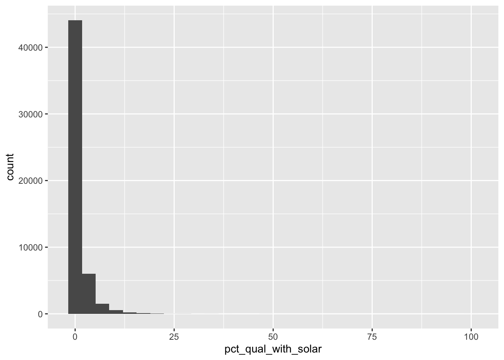
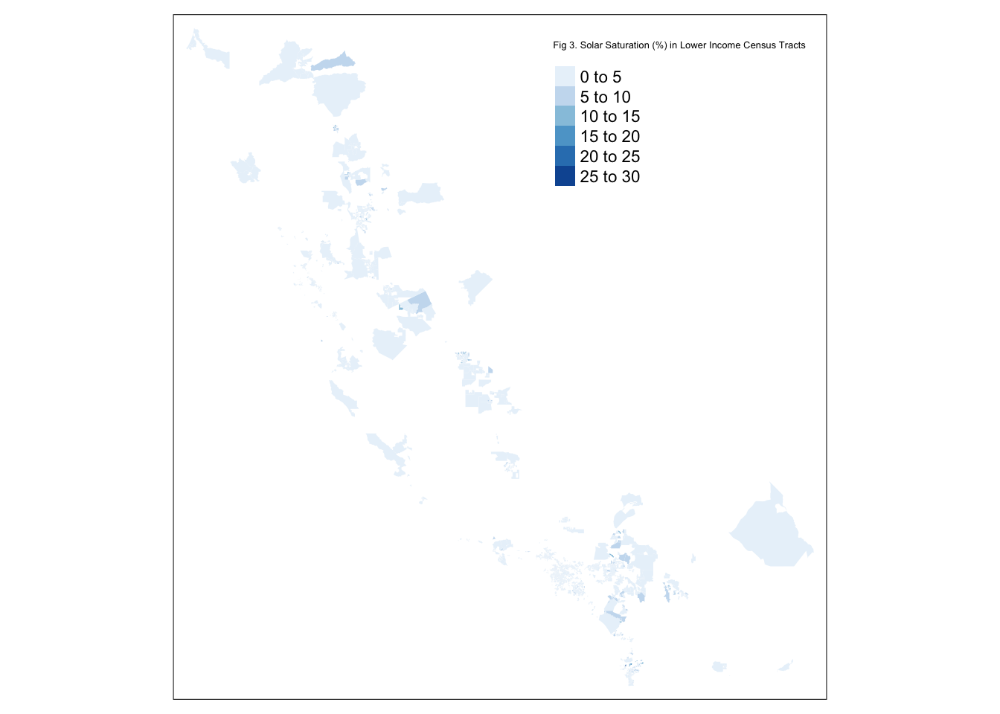

Background
What you may already know of rooftop solar, is that it is a clean and often financially savvy way to supplement energy consumption. In California, households can effectively “sell” back the electricity generated at the same price point they would otherwise buy it for. Put differently, utilities buy back electricity at the rate that they sell it, even while cheaper wholesale rates for solar are on the market. Who “pays” for this more expensive electricity that utilities are buying? The short answer is that customers without rooftop solar are paying. On November 10th 2022, the California Public Utilities Commission (CPUC) put forth a proposal that disincentivizes solar adoption and production: rolling back compensation and decreasing the maximum allowable install capacity (solar panel wattage). In the previous proposal in December 2021, the CPUC actually suggested tacking on a monthly fee to the bills of homes with rooftop solar, but this clause has since been walked back (Penn 2022).
Stakeholders across the energy industry all feel very differently on matter. On the one hand: we want to incentivize clean and decentralized energy generation. But on the other hand: we want to ensure that these cost shifts are not burdening those who lack access to solar, primarily low income households.1 Essentially, the question boils down to: how much should homeowners be paid for rooftop solar energy exports and how much should rooftop solar users pay for grid infrastructure?
The current proposal is out for public comment through until the CPUC’s five members take the proposal to a vote.
Objective
In this post, I explore if income is a statistically significant predictor in rooftop solar adoption in California. I also look to see if there is a significant difference in income relative to solar adoption.
Methods
Since individual household data regarding income and rooftop solar is unavailable for public use, I use:
- Income data on a census tract basis found here from the Federal Financial Institutions Examination Council (FFIEC) which maintains income-related census data available for download;
- Rooftop solar data found here from Google Project Sunroof which uses Google overhead imagery, weather station data, and machine learning algorithms to estimate rooftop solar potential of US buildings down to the census tract level; and
- California census tract spatial data found here for mapping and visualizing at the census tract level.
After reading in the data, I clean the data, select only the columns of interest, and create additional columns needed for joining of data and performing analyses. Most notably, I created a variable called pct_qual_with_solar. This variable ranges from 0% to 100% and represents the ratio of number of buildings with solar with respect to the number of buildings deemed as “qualified” for rooftop solar2. As an example, if census tract A has 10 buildings qualified for rooftop solar, and 4 buildings in census tract A already have rooftop solar, this census tract would have a pct_qual_with_solar of 40%. I refer to this variable as “solar saturation” since it reveals how saturated a census tract is in terms of rooftop solar adoption. The denominator in this variable is qualified homes as opposed to total buildings, since I feel the latter could lead to bias if income is correlated with locations with census tracts of low rooftop solar qualifications (such as insufficient roof size).
I first looked at the distribution of the solar saturation for California. We see right skew which hints that these data may be a good candidate for log-normalization. However, after taking the log of my data and performing an Ordinary Least Squares (OSL) regression on the log-normalized data, I noticed that the assumptions for OLS were not drastically better met. Additionally, due to the large amount of data we have at 0% solar saturation, to perform a log-normalized OLS regression, this would require either data manipulation, or removing much of the data.

In running my regression, I determined it would make the most sense to account for sunlight when looking at the relationship between census tract income and census tract solar generation. This is because, similar to how qualified buildings may be correlated with income, sunlight may also be correlated with income, and we want to ensure we are mitigating any omitted variables bias.
I therefore regressed as follows:
\[pctsolarsat_i =\beta_{0}+\beta_{1} \cdot sunlight_i +\beta_{2} \cdot \text income_i+\varepsilon_i\]
While I considered that there may be an interaction effect between income and sunlight, I found that variance in solar adoption was not largely explained by this interaction.
I then performed a hypothesis test to look further at income and rooftop solar adoption, testing the below hypotheses:
- Null Hypothesis: The true difference in mean solar saturation between lower income and higher income census tracts is equal to 0.
- Alternative Hypothesis: The true difference in mean solar saturation between lower income and higher income census tracts is not equal to 0.
Results and Discussion
Linear Regression
After regressing, we end up with the following model:
\[solarsaturation =-0.68 + 0.0000080 \cdot sunlight + 0.0000384 \cdot income\]
| Solar Saturation (%) | |||
|---|---|---|---|
| Predictors | Estimates | Conf. Int (95%) | P-value |
| Intercept | -0.6756526 | -0.8449613 – -0.5063439 | <0.001 |
| Median Income | 0.0000384 | 0.0000369 – 0.0000399 | <0.001 |
| Average Yearly Sunlight Generation (kWh) | 0.0000080 | 0.0000055 – 0.0000106 | <0.001 |
| Observations | 6379 | ||
| R2 / R2 adjusted | 0.293 / 0.292 | ||
We see from this model that both median income and sunlight have a positive effect on solar saturation in a census tract, which is expected. Since our coefficient for median income is 0.0000384, for every $1 increase in median yearly income, our model predicts a 0.0000384% increase in solar saturation for that census tract. To put in more real terms, for every $26,042 increase in yearly median census tract income, this model predicts a 1% increase in solar saturation.
What’s interesting is that we see a higher coefficient for median income than sunlight. This means, barring no bias, this model finds that income is a better predictor of solar adoption than sunlight. This provides more evidence that lower-income households lack access to rooftop solar and it’s associated financial benefits.
Hypothesis Testing
Using a t-test, we find that the mean solar saturation in higher income census tracts is 4.85%, compared to merely 1.69% in lower income census tracts. Our 95% confidence interval spans from 3.00% to 3.31%, meaning that we are 95% confident that this interval captures the difference in mean solar saturation. These findings are highly significant (p-value < 2.2e-16).
Spatial Analysis
To visualize this difference in census tract solar adoption, we map solar saturation by census tract for both higher income census tracts and lower income census tracts. We can see, below, visually, that there are much higher saturation levels in the higher income census tracts. We can also see, evidenced by the amount of grey, that we are missing data for about an eight of the census tracts. This is due to missing solar data for about 1,000 census tracts. If this missing data is not due to randomness in the data collection, this could lead to bias in the model.
Another conclusion from this visual is how low solar saturation percentages are overall. This means there is still a lot of potential for rooftop solar growth! This also drives home how important it is to ensure equity in the rooftop solar industry, since these inequities may escalate as solar adoption continues to increase.


Opportunities for Further Research
While the findings of this study are statistically significant, we may still be experiencing sources of bias. Below I outline those potential biases, and how further research could aid in better model development:
- Missing census tracts for solar
- non-residential buildings
- racial data
Conclusion
Furthermore, I explore this relationship in California, where the California Public Utilities Commission is likely to lower financial incentives to rooftop solar adoption due, in large part, to equity concerns.
References
Footnotes
Low income households often lack access to solar since (1) financing options are often needed to cover the high upfront cost of solar (2) if English isn’t a first language, or if multiple jobs are worked, it may be a struggle to find the time to research solar, and (3) renters don’t have the autonomy to install solar panels, and landlords do not have an incentive to help their tenants save on their electric bill.↩︎
Per Google Project Sunroof criteria which considers amount of sunlight and roof space.↩︎
Citation
@online{cutler2022,
author = {Victoria Cutler},
editor = {},
title = {Is {Rooftop} {Solar} {Equitable?}},
date = {2022-12-08},
url = {https://victoriacutler.github.io/posts/2022-12-22-solar-equity/},
langid = {en}
}